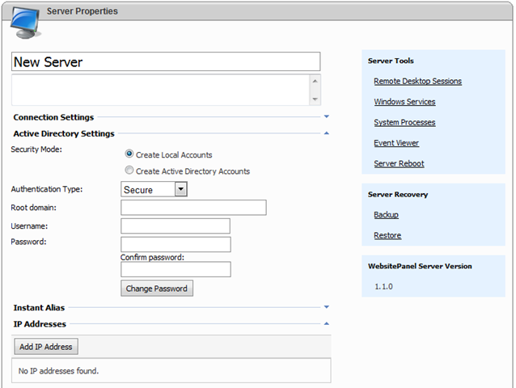

Setting up Remote Servers
Translations:
In order to allow WebsitePanel to manage system resources on some server it should be registered with WebsitePanel first.
What is Server?
"Server" in WebsitePanel can be considered as an instance of WebsitePanel Server application installed on controlled machine. Also, server is a physical box with corresponding IP addresses and installed applications (services) that will be available to your customers.
In order to control the server through WebsitePanel "Server" application should be installed and configured there.
You can find more about WebsitePanel architecture in How WebsitePanel Works article.
Changing Server Password
You should specify server access password during the installation of WebsitePanel Server application. This password is used to access Server application on the controlled server and should be specified when registering a new controlled server in WebsitePanel.
However, if you've accidentally forgotten the server password or want to change it to something more secure you can use "WSP.Server.Config.exe" tool located in "bin" folder of WebsitePanel Server application ("c:\WebsitePanel\Server\bin" by default).
Registering New Server
In order to see the list of remote servers sign in under "serveradmin" account and go to "Configuration -> Servers" page.
To register new remote server click "Add Server" button. "Add Server" page will be displayed:
Fill form fields as following:
-
Server name - display name of the controlled server visible in WebsitePanel. It doesn't mean the name of computer, it's just an arbitrary name describing the purpose of controlled server, e.g. "Server 1", "Mail Server 1", "Web Server 3".
-
Server URL - URL of WSP Server application installed on remote server, e.g. http://34.32.0.10/Server
-
Server Access Password - server access password specified during WSP Server installation or changed in "WSP.Server.Config.exe" tool.
-
Confirm Password - server access password confirmation.
Click "Add" button to register the server. During this step remote WSP Server application will be contacted and if all entered data is correct the following screen will appear:
In case you've specified wrong server URL or incorrect password or server license has expired/blocked you'll see a corresponding message.
On "Server Properties" page you can see the following sections to control different server aspects:
- "Connection Settings" section - allows to change the URL to Server application on the controlled server (e.g. in case it was moved to other location) and specify a new password to access the server.
- "Active Directory Settings" section - allows specifying whether all server service user account and groups are created in Active Directory or as local accounts.
- "Instant Alias" section - allows to specify an "instant alias" on the server-level.
- "Services" tab - allows managing the list of installed services (applications) and their corresponding settings. Those services will be provided to hosting customers as hosting resources.
- "IP Addresses" tab - allows managing the list of IP address assigned to this server.
- "Global DNS Records" tab - allows managing server-level DNS records.
- "Terminal Connections" link - allows view/manage active terminal connections.
- "Windows Services" link - allows view/manage Windows services.
- "Processes" link - allows to view/manage system processes running on the server.
- "Reboot" link - allows rebooting the server.
Active Directory Integration
Several server services providers like Microsoft Windows 2003, IIS 6.0, MS FTP require creating user accounts and groups. For example, for Microsoft Windows 2003 provider it is "System Users and Groups" that can be used in SharePoint Services, SQL Server Reporting Services for authentication; for IIS 6.0 it is web site anonymous and FrontPage accounts. Those user accounts and groups can be created by providers in two locations:
- Local users and groups
- Active Directory organizational units
If the controlled server is a member of Active Directory domain it can be configured to create users and groups there.
Active Directory integration can be configured on server level only, i.e. you can specify "local" mode for one service (say IIS 6.0) and "AD" mode for another (say "FTP").
In "Active Directory Settings" section specify the following settings:
- Security mode - specify whether accounts will be created locally or in Active Directory.
- Authentication method - select AD authentication method that will be used by WSP to access Active Directory.
- Root domain - specify the root domain in the forest where accounts will be created. The domain should be specified in the form "sub.domain.com".
- Username, password - credentials of the system account that has right to manage Active Directory (usually it is a member of "Domain Administrators").
Adding IP Addresses
This section allows to specify the list of IP addresses assigned to the controlled server. These IP address will be needed when configuring server services.

In order to register new IP address click "Add IP Address" button.
Fill form data as following:
- IP Address - external (or public) IP address visible outside the network. External part of IP address is used when creating DNS zone records.
- NAT Address - internal (or private) IP address inside the network corresponding to the external one. If you don't have NAT-based network you may leave this field blank and specify on external IP. Internal part of IP address is used when creating web site host headers, mail domain IP binding, etc.
- To - this field allows you to add a whole range of IP addresses starting from External IP and ending with "To" inclusive. When internal IP is specified it will be also incremented (or decremented) when adding a range.
- Server assigned - the server to which the given IP address is assigned.
- User assigned - the user to which the given IP address is assigned. When adding "common" IP addresses you may leave this field as "Empty", but when adding specific IP address that will be used a static IP for some customer web site you should select his user account.
- Comments - arbitrary comments that would help to distinguish one IP address from another in the list.
Click "Update" button to apply your changes.
How Many Server IP Addresses Should I Have?
We recommend you having at least two IP addresses for each server. Usually such services like DNS and Mail operate more stable when configured to use more than one IP address (primary and secondary DNS zones should resolve to different IP addresses and backup mail exchanger (additional MX record in DNS) should be setup for better mail system availability).